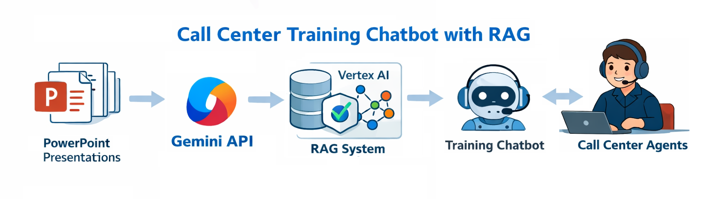

Call Center Training Chatbot with RAG
1. Problem Definition / Objective
The objective of this project was to build a chatbot capable of learning from more than 30 PowerPoint presentations currently used to train call center agents. These presentations contain critical operational knowledge distributed across text, tables, and images. The goal was to extract all available information from the .pptx files and use it to construct a Retrieval-Augmented Generation (RAG) system, enabling agents to query training content conversationally through a chatbot powered by Vertex AI.
2. Data Available
- Over 30 PowerPoint presentations (.pptx) used for call center training.
3. Solution Architecture
The solution begins by programmatically extracting all content from the PowerPoint files using the Python python-pptx library. This includes textual content, tables, and embedded images. All extracted information is stored in a structured JSON file.
Images are encoded in Base64 format during extraction. These images are then converted back into byte format and processed using the Gemini API, allowing a Large Multimodal Model (LMM) to interpret and generate descriptive text for each image. The generated image descriptions are added back into the JSON, enriching the textual knowledge base. Finally, within the Vertex AI environment, a corpus is created from the processed data. This corpus serves as the knowledge source for the chatbot’s RAG architecture, enabling accurate, context-aware responses to user queries based on the original training material.
4. Tools and Technologies
- Python
- Vertex AI
- Gemini API
- PowerPoint data processing (.pptx files)